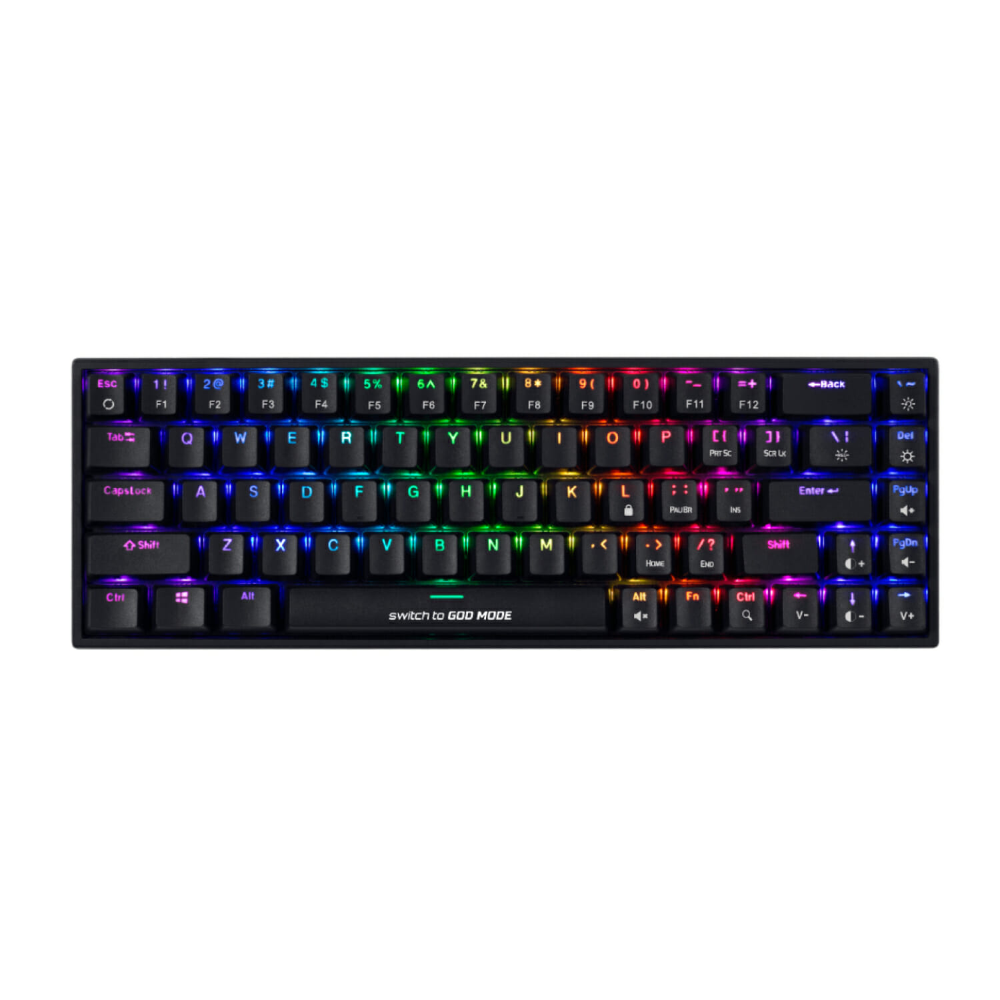

Ноутбуки
Ноутбуки — це портативні комп’ютери, що дозволяють працювати будь-де. Вони ідеально підходять для роботи, навчання та розваг. Основні характеристики:
- Процесор: Intel Core i5/i7 або Apple M1 Pro
- Оперативна пам’ять: 8GB - 32GB
- Дисплей: 13” - 16”, IPS, Full HD/4K
- Зберігання: SSD 256GB - 1TB
- Автономність: до 10 годин роботи
Настільні ПК
Настільні комп’ютери підходять для ігор, роботи та навчання. Вони мають високу продуктивність та можливість модернізації. Основні характеристики:
- Процесор: Intel Core i5/i9 або AMD Ryzen 5/9
- Оперативна пам’ять: 16GB - 64GB
- Відеокарта: NVIDIA GeForce RTX або AMD Radeon
- Зберігання: SSD + HDD (512GB + 2TB)
- Система охолодження: активне повітряне або рідинне

Аксесуари
Аксесуари допомагають зробити роботу комфортнішою та продуктивнішою. Популярні аксесуари:
Клавіатура
Механічні, мембранні, бездротові моделі для будь-яких потреб.
Монітор
Сучасні IPS та VA монітори з високою частотою оновлення.
Контакти
Телефон: +380 096 559 44 63
Email: dmytro.ivasiuk.24@pnu.edu.ua